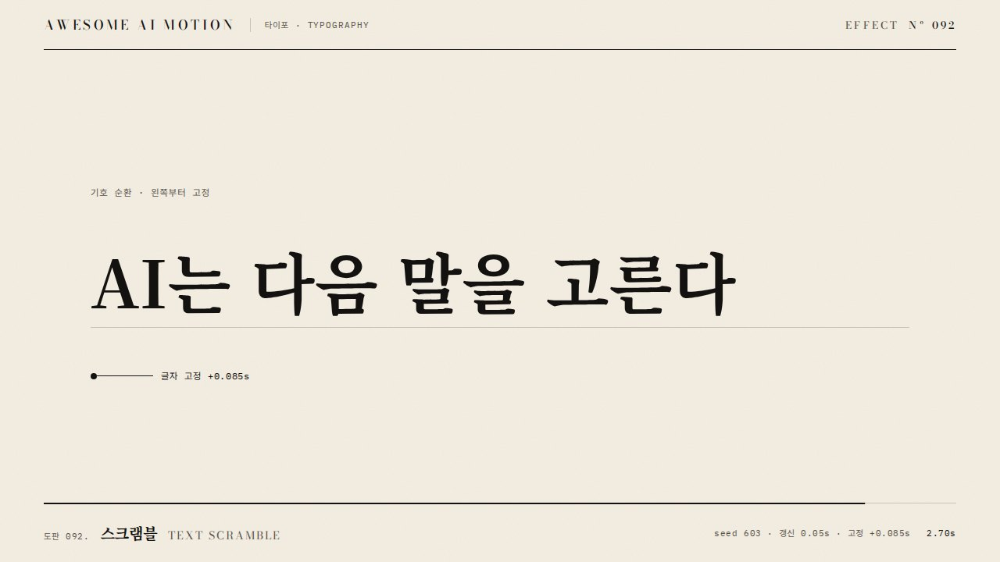

문장의 위치는 유지된 채 글자 윤곽이 사인파처럼 휘고 흔들리는 효과Letter outlines bend and sway like a sine wave while the sentence stays in place.
제목 글자가 진폭 4px, 파장 80px의 사인파로 1.8초 동안 물결치고 마지막 0.4초에 진폭이 0으로 줄어든다
진폭을 15px 이상 주어 글자를 알아볼 수 없거나, 파동 주기가 빨라 어지럽다
기본값은 클립에 쓴 값Defaults are the values used in the clip
| 항목PARAM | 기본DEFAULT | 범위RANGE | 메모NOTE |
|---|---|---|---|
| 지속 | 1800ms | 1200~3000ms | 마지막 400ms는 복원 |
| 진폭 | 4px | 2~8px | displacement scale |
| 파장 | 80px | 50~140px | baseFrequency로 조절 |
| 주기 | 1200ms | 800~2000ms | 위상 이동 |
| 방향 | 수평 | 수평/수직 | y 변위 방향 |
/* <feTurbulence type=fractalNoise baseFrequency='0.012 0' seed=2/><feDisplacementMap scale=4 yChannelSelector=G/> */
tl.to('#turb',{attr:{baseFrequency:'0.012 0.02'},duration:1.8,ease:'none'},t)
.fromTo('#disp',{attr:{scale:0}},{attr:{scale:4},duration:.4,ease:'sine.out'},t)
.to('#disp',{attr:{scale:0},duration:.4,ease:'sine.inOut'},t+1.4);그대로 붙여 넣는다Paste as is
<제목>에 웨이브 워프를 넣어줘. SVG feTurbulence(baseFrequency 0.012 0, seed 2)와 feDisplacementMap으로 글자 윤곽에 진폭 4px, 파장 약 80px의 물결을 주고, 1.8초 동안 위상이 이동하게 해. 처음 0.4초에 진폭을 올리고 마지막 0.4초에 0으로 sine.inOut 복원. paused 타임라인으로 구동해.
Add a wave warp to <title>. Use SVG feTurbulence (baseFrequency 0.012 0, seed 2) with feDisplacementMap to ripple the outlines at 4px amplitude and about 80px wavelength, shifting phase over 1.8s. Raise amplitude in the first 0.4s and restore it to 0 in the last 0.4s with sine.inOut. Drive from a paused timeline.
<파일>의 <제목>에 wave-warp를 구현해. 진폭 4px, 파장 80px, 지속 1800ms, 복원 400ms. 0.3초, 0.9초, 2.0초를 캡처해 글자 윤곽이 물결치는지, 2.0초에 원래 모양과 일치하는지, 글자가 읽히는지 확인해.
Implement wave-warp on <title> in <file>: amplitude 4px, wavelength 80px, duration 1800ms, restore 400ms. Capture at 0.3s, 0.9s, and 2.0s to verify outlines ripple, 2.0s matches the original shape, and the text stays readable.
HyperFrames · ReelForge · Scrolline

개념 출처와 라이선스. 구현은 이 레포에서 새로 씀Concept sources and licenses. Implementations are original to this repo
claude-skill:music-to-video/references/motion-primitive-catalog.md#text-wave-distort)unknownclaude-skill:music-to-video/references/motion-primitives/text-wave-distort/scene.html)unknownclaude-skill:music-to-video/references/motion-primitives/text-wave-distort/index.html)unknown